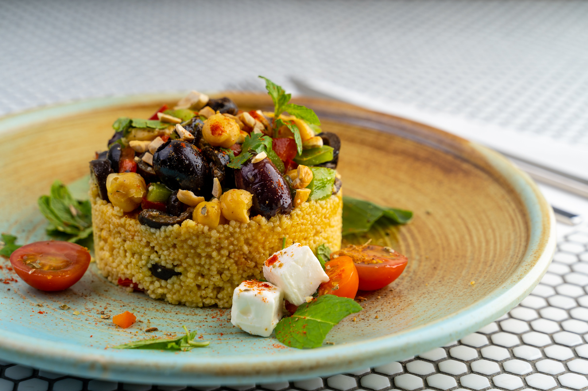

Tajine de Verduras con Cuscús
Ingredientes:
- 120 g de cebolla
- 1 diente de ajo
- 10 g de Ras el Hanout
- 250 g de calabacín
- 200 g de tomate troceado natural
- 50 ml de agua
- 5 g de comino molido
- 10 g de cilantro molido
- 2 g de canela molida
- 100 g de cuscús
- Caldo de verduras
- 15 g de uvas pasas sultanas
- 15 g de anacardos
- 10 g de mantequilla
- Aceite de oliva virgen extra
- Sal al gusto
Cómo hacer Tajine de Verduras al Ras el Hanout con Cuscús
Dificultad: Fácil
Tiempo total: 30 minutos
Elaboración: 10 minutos
Cocción: 20 minutos
- Pelamos y picamos finamente el diente de ajo. Hacemos lo mismo con la cebolla, cortándola en juliana fina. Calentamos aceite en una sartén y pochamos ambos a fuego suave. Cuando la cebolla esté transparente añadimos el Ras el Hanout y removemos para mezclar. Pochamos un par de minutos más.
- Mientras tanto, lavamos el calabacín y lo cortamos en dados. Lo agregamos a la sartén junto con el tomate triturado y el agua. Sazonamos, tapamos y dejamos cocer durante 5 minutos o hasta que el calabacín esté ligeramente tierno y al dente. Retiramos y reservamos.
- Preparamos el cuscús tostando las especias en una cazuela durante un minuto, de esta manera desprenden su olor y se potencia su sabor. Colocamos el cuscús en una jarra medidora para calcular la cantidad de caldo necesaria, que será el mismo volumen. Añadimos el caldo a la cazuela, llevamos a ebullición y añadimos el cuscús. Tapamos y dejamos reposar 10 minutos.
- Troceamos los anacardos con las manos y picamos las uvas pasas finamente con un cuchillo bien afilado. Los añadimos al cuscús junto con la mantequilla y removemos, usando la punta de un tenedor para soltar los granos. Servimos junto con las verduras al Ras el Hanout espolvoreadas con almendra laminada tostada (opcional).